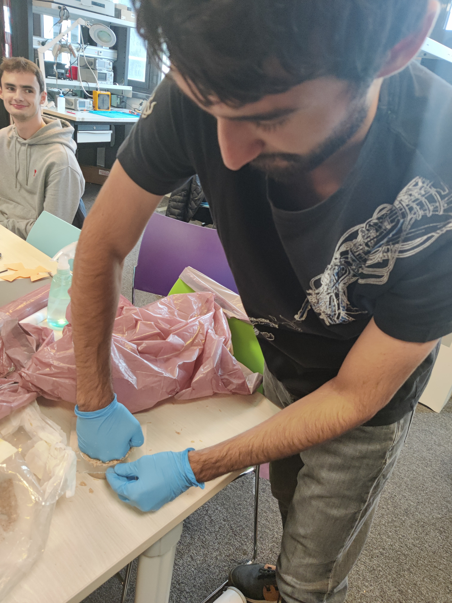
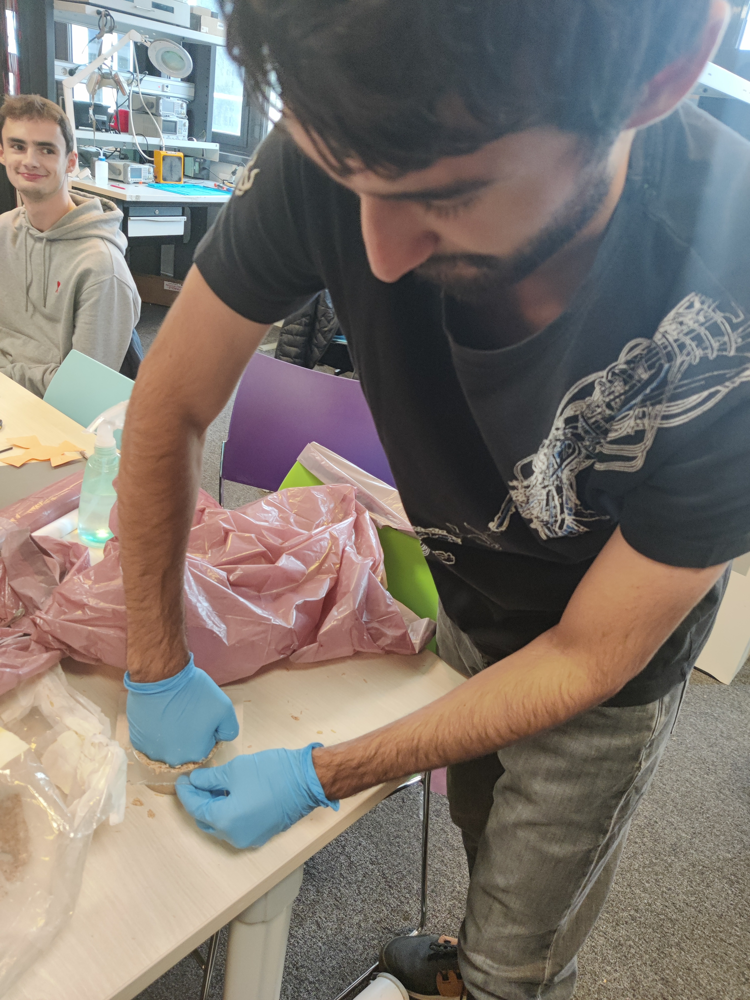
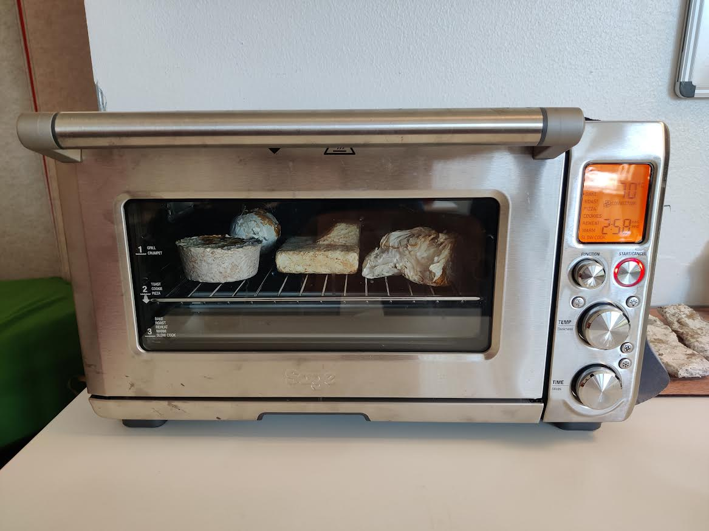

Growing mycelium, The basics
Step 1: sterilize the tools
Mycelium is sensible to bacterial infection,
to avoid contamination use sterilized gloves, bag, spoon, and mold, with alcohol.
Step 2: blend the substrate
Take a chunk out of the substrate bag and filter out the parts that are too hard where the fungi solidified too much,
then break the chunk in two and rub the two parts together breaking them down into smaller parts.

Step 3: add accelerant and water
Using a (sterilized) spoon add ~10% of the volume of mycelium in mycelium flour (mycelium accelerant)
then add ~20% off the volume in water.
Mix it until you get an homogenous sticky paste.
Step 4: molding
Put the substrate paste in the mold,
It's important to pack it tightly to leave no air bubbles and end up with a solid result
 

Step 5: incubate
Put the mold in the incubator,
Don't forget to mark it with your name and the date of incubation
for that case the incubation will be done in around 10 days
Step 6: unmold it
Once incubation is done, remove excedents with a knife and unmold the object,
don't forget to clean
Step 7: bake
Bake the object in a hoven to kill the mushroom, 2x3h at 70°c, in two instances to let the water evaporate
